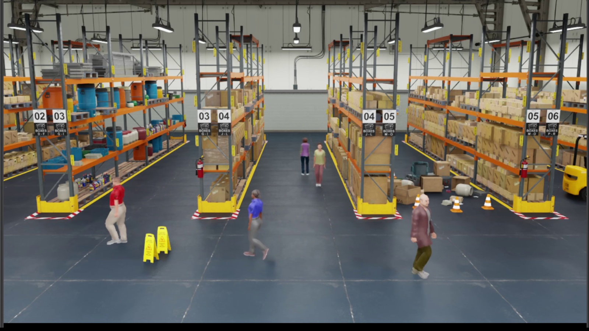
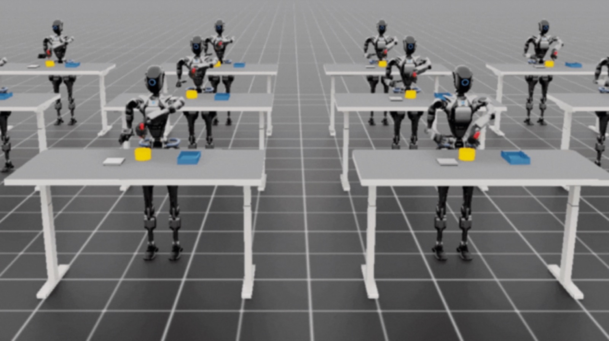

Project title
SOM Project At-A-Glance
Designing a smart manufacturing system empowered by reinforcement learning.
A Self-Organizing Manufacturing collaboration with Prof. Bingling Huang and the Design for Intelligent Systems and Learning Laboratory at California State University, Fullerton.



Project Overview
Self-organizing manufacturing for adaptive factories.
Background
Factories that learn, collaborate, and adapt.
From personalized prosthetics to on-demand electronics, modern products are increasingly unique, while many factories still depend on rigid, centralized control systems that are slow to adapt. The next leap in manufacturing is self-organizing systems: factories where machines and robots can learn, collaborate, and adapt in real time.
Self-Organizing Manufacturing combines AI, multi-agent reinforcement learning, robotics, and intelligent system design to build manufacturing environments that can think and evolve. The work connects smart factories, customized manufacturing, resilient supply chains, and collaborative robotics.
Applications
Where SOM can make manufacturing more resilient.
01
Smart factories
Distributed decision-making for machines, robots, and production cells.
02
Customized production
Flexible workflows for personalized products and rapidly changing requirements.
03
Resilient supply chains
Adaptive coordination when resources, orders, or operating conditions change.
04
Collaborative robotics
Multi-agent learning for robots that coordinate tasks in shared environments.
Team
Project teams
Simulation Team
Simulation and environment design
- Aditya DhayapulayCSUF
- Aaron ZobelCSUF
- Wenyang QiuUniversity of Toronto
- Xu AnUSC
- Haoyan ZengRutgers University
Learning Team
Learning and reinforcement learning
- Chengxi LiEE, USC, Graduate
- Jim AlvarezCS, CSUF, Senior
- Daniel LopezCS, CSUF
- Jocelyn MendozaCS, CSUF, Senior
- Paige SaychareunCS, CSUF, Junior
Hardware Team
Mechanical systems and hardware
- Matthew NassifME, CSUF, Sophomore
- Moe TaghipourfardME, CSUF, Senior
- Adrew SchaeferME, CSUF, Sophomore
- Claudia Garcia LudenaME, CSUF, Sophomore
- Katherine Martinez-CastilloME, CSUF, Junior
- Haley Barrios GomezME, CSUF, Junior
- Shaan SinghME, CSUF, Junior
- Sashel GarnerME, CSUF, Junior
Faculty Collaboration
Prof. Bingling Huang and Hao Ji
This page captures a project-at-a-glance view for the collaboration between Prof. Bingling Huang's Design-is-ALL Lab and Transformer Lab.